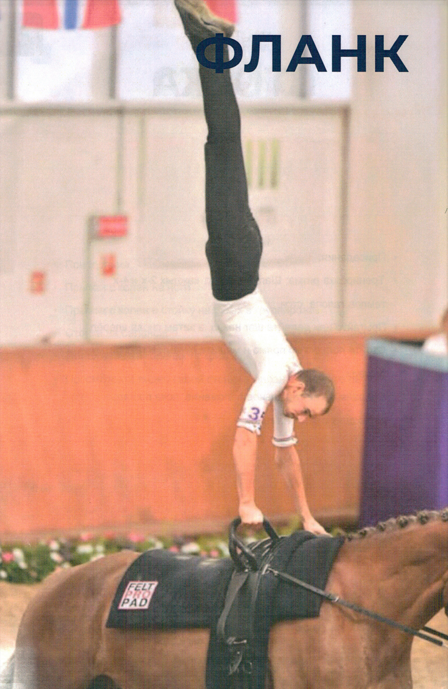

Нажмите на фото, чтобы увеличить
Из седа лицом вперед, вольтижер выполняет мах вытянутыми ногами вверх до положения, близкого к стойке на руках, ноги сомкнуты, выпрямляя руки для максимального подъема. Не прерывая движения, в высшей точке подъема бедра резко сгибаются, опуская ноги в почти вертикальное положение. В этот момент бедра находятся прямо над гуртой, создавая «пике». Вольтижер мягко касается лошади, начиная с внешней стороны правой голени, и плавно переходит в вертикальное положение бокового седа внутрь. Лицо вольтижера может быть при этом слегка направлено вперед.
Из седа лицом вперед, вольтижер выполняет мах вверх до положения, близкого к стойке на руках, ноги сомкнуты, выпрямляя руки для достижения максимального подъема. Это действие, в сочетании с отталкиванием плечами, обеспечивает дополнительную высоту подъема и максимальный полет. Вольтижер приземляется на обе ноги снаружи от лошади, лицом вперед.